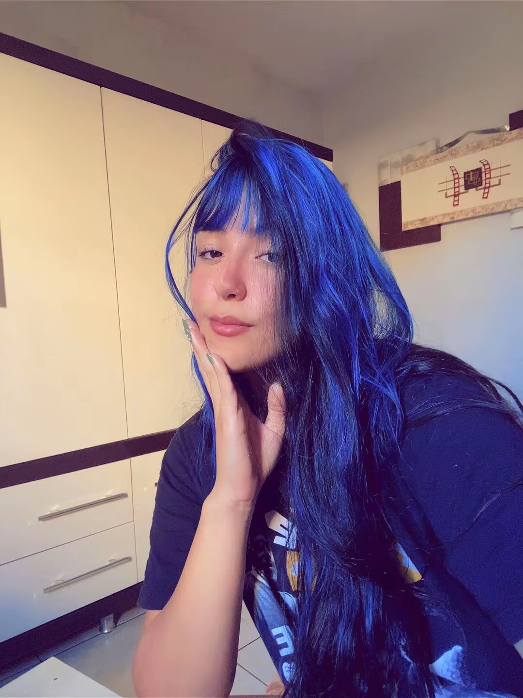

Classificação IA em Tempo Real
Rede neural convolucional treinada em Keras/TensorFlow processa frames 224×224 px para distinguir Solo Limpo, Ervas Daninhas e Árvores instantaneamente.
O AgroVision integra visão aérea por drone, redes neurais convolucionais em tempo real e geração automática de ortomosaicos para identificar ervas daninhas e pragas com precisão cirúrgica.
Cada módulo do AgroVision foi projetado para entregar velocidade, confiabilidade e clareza na tomada de decisão agrícola.
Rede neural convolucional treinada em Keras/TensorFlow processa frames 224×224 px para distinguir Solo Limpo, Ervas Daninhas e Árvores instantaneamente.
Costura automática dos 12 quadrantes usando OpenCV com equalização de luz no espaço LAB e suavização de bordas (feathering com 35 px de sobreposição).
Cada ponto varrido registra data, setor, classe detectada, grau de confiança, status crítico e coordenadas (X, Y) no banco de dados relacional MySQL 8.0.
Monitoramento integrado de temperatura, umidade relativa do ar, velocidade do vento e geolocalização para orientar o momento ideal de manejo.
Teste como o dashboard do AgroVision reage às classificações da IA e simule a varredura aérea dos 12 quadrantes.
Comunicação assíncrona de baixa latência entre a captura da câmera, o modelo de IA, a API REST e o dashboard web.
Python Multithreading, OpenCV (VideoCapture), Keras / TensorFlow (keras_model.h5) realizando predições em paralelo sem travar o FPS.
FastAPI assíncrono, streaming /video_feed, costura de imagens via NumPy/OpenCV e persistência no banco MySQL 8.0.
HTML5, CSS3 e JavaScript puro consumindo endpoints em tempo real, gráficos SVG dinâmicos e dados meteorológicos da Open-Meteo API.
git clone https://github.com/nicolevbarbosa-maker/AgroVision_TCC.git
Desenvolvido como Trabalho de Conclusão de Curso (TCC) em Análise e Desenvolvimento de Sistemas — SENAI.
Arquitetura FastAPI, algoritmo de ortomosaico OpenCV, banco MySQL e integração com o modelo Keras.
@Github↗ @Linkedin↗Desenvolvimento da interface do dashboard, sincronização assíncrona em JavaScript e consumo da API.
@Github↗ @Linkedin↗
Identidade visual, prototipação das telas, experiência do usuário e estruturação responsiva da plataforma.
@Github↗ @Linkedin↗Coleta de dataset, treinamento do modelo de visão computacional e calibração das classes de detecção.
@Github↗ @Linkedin↗